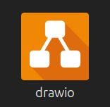
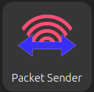

Introduction
The super power of Linux for a network engineer is how easy it is to create a vlan on an interface and tag it, all of the Unix tools that are built is such as awk, grep, sed, sort that allow you to quickly pull data out of files, change text inside files and print out results, and all the free open source projects for networking such as My Traceroute, and sipcalc.
I did a refresh at a customer with 72 sites. They were replacing Cisco 3750s with HPE 2930s. There were a lot of IoT type devices like body cameras, door access controllers, surveillance cameras, etc. that they wanted verified after the cutover. I have a python script on my github that takes the output of show ip arp and creates a file with the mac address/ip address in a python dictionary. The output of that script is sent to a second script located here that uses the output of show mac address interface g1/0/1 and the dictionary to build a table of the:
- vlan
- ip address
- MAC address
- port number
- manufacturer
for each entry in the dictionary. Here is a sample of the table created:
Number of Entries: 184
Device Name: Cisco-6509
Vlan IP Address MAC Address Type Interface Vendor
-------------------------------------------------------------------------------
42 10.50.43.84 ac8b.a915.301e dynamic Gi3/41 Ubiquiti
--------------------------------------------------------------------------------
42 10.50.43.43 0002.9908.53f0 dynamic Gi3/43 Apex
--------------------------------------------------------------------------------
900 10.254.50.106 000b.86b7.ac5f dynamic Gi3/44 ArubaaHe
-------------------------------------------------------------------------------
I used grep and sort to pull out the devices that needed to be verified. Here is an example:
grep -E 'Uni|Axi|Aru|Chec|Sam|Sony|Hew|Honey|SHARP|Pronet|IB|Digiboar|Siemens|Tanta|Bosch|Videx|Industr|WatchG|Zebra|Conte' Cisco-6509-ports.txt | sort -b -k 5
35 10.50.35.15 80c1.6e91.99b1 dynamic Gi3/25 HewlettP
35 10.50.35.23 aca8.8e51.3221 dynamic Gi3/25 SHARP
40 10.50.40.96 0020.4afb.8f89 dynamic Gi3/38 Pronet
42 10.50.42.198 24de.c6cc.5792 dynamic Gi3/41 ArubaaHe
42 10.50.43.150 0020.4a0b.e40f dynamic Gi3/41 Pronet
900 10.254.50.106 000b.86b7.ac5f dynamic Gi3/44 ArubaaHe
40 10.50.40.17 84d4.7ecf.937e dynamic Gi3/47 ArubaaHe
905 10.254.50.37 001a.1e06.c0a8 dynamic Gi4/35 ArubaaHe
906 10.254.50.37 001a.1e06.c0a8 dynamic Gi4/36 ArubaaHe
901 10.254.50.106 000b.86b7.ac5f dynamic Gi4/37 ArubaaHe
42 10.50.43.251 0040.8420.700b dynamic Gi8/1 Honeywel
42 10.50.42.221 a08c.fd68.f4f5 dynamic Gi9/10 HewlettP
42 10.50.42.71 001d.9608.7fe1 dynamic Gi9/24 WatchGua
42 10.50.43.107 001d.9608.7fe5 dynamic Gi9/24 WatchGua
42 10.50.43.113 001d.9608.7fe2 dynamic Gi9/24 WatchGua
42 10.50.43.127 001d.9608.7fe0 dynamic Gi9/24 WatchGua
42 10.50.43.138 001d.9608.7fe6 dynamic Gi9/24 WatchGua
42 10.50.42.79 0030.6ec5.d6e6 dynamic Gi9/36 HewlettP
42 10.50.43.159 7446.a050.ca72 dynamic Gi9/36 HewlettP
42 10.50.43.78 c8d9.d2b6.dbdb dynamic Gi9/36 HewlettP
42 10.50.43.195 aca8.8e76.b63f dynamic Gi9/36 SHARP
Grep is used to search for the terms, the | means OR and then sort -b -k 5 means ignore leading blanks, sort by the 5th column.
With 72 sites, an average of 4 switches per site, you can image how long it would have taken using Notepad to open 288 files and copy the data out? but with the grep/sort line it took seconds. And the interfaces are in order so it's easy to match the running configuration to the output.
FreeCAD
Draw.io

The Ubuntu App store
PacketSender

A cross platform open source tool. Available for Mac, Linux, Windows.
Features Packet Sender can send and receive UDP, TCP, SSL, and DTLS on the ports of your choosing. It also has a built-in HTTP client for GET/POST requests and Panel Generation for the creation of complex control systems.
Common Uses Packet Sender was designed to be very easy to use while still providing enough features for power users.
• Test automation Using its command line tool or hotkeys
• Testing network APIs Using the built-in UDP/TCP/SSL/DTLS clients
• Malware analysis using the built-in UDP/TCP/SSL/DTLS servers
• Panel Generation Create single-button panels that trigger a series of commands for control systems.
• Testing HTTP Single-button GET/POST requests for control systems.
• Intense Traffic Flood at a particular rate to stress-test devices
• Testing network connectivity/firewalls by having 2 Packet Senders talk to each other
• Tech support by sending customers a portable Packet Sender with pre-defined settings and packets
• Security research Send SSL and then analyze the traffic log.
Installation Instructions